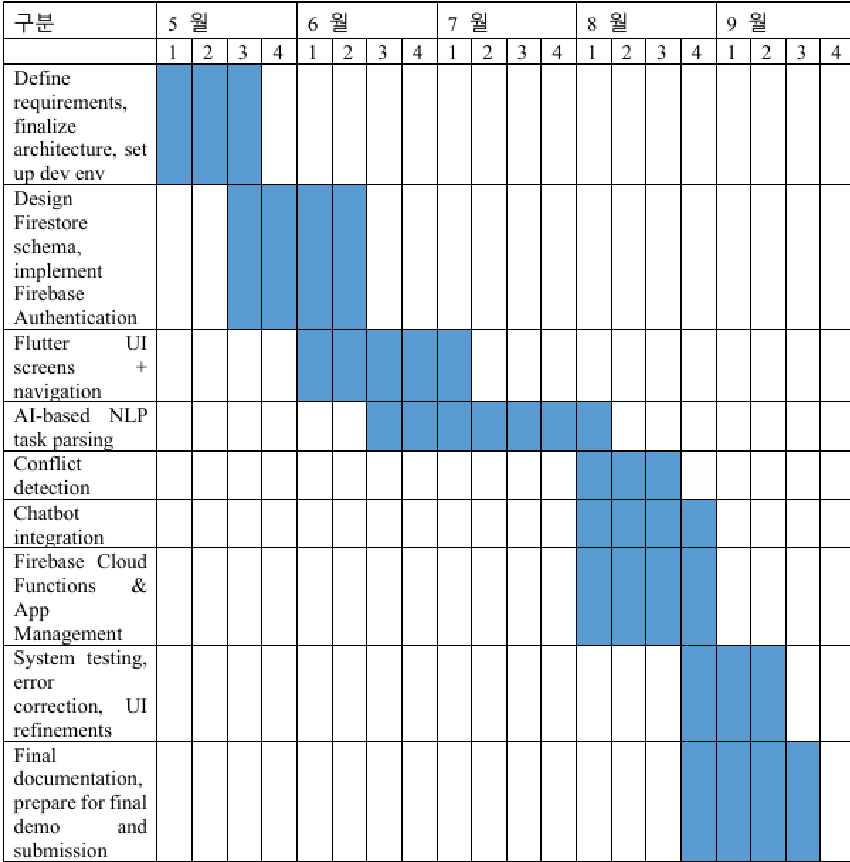

202255636 Kadyrov Adilet 202255634 Yegizbayev Zholan
지도교수: 조환규
제출일: 2025년 7월 16일
부산대학교
1 Project Overview 1
1.1 Introduction and Problem Background . . . . . . . . . . . . . . . . . . . . . 1
1.2 Project Objectives . . . . . . . . . . . . . . . . . . . . . . . . . . . . . . . . 2
2 Modifications to Requirements and Constraints 4
2.0.1 Initial Requirements . . . . . . . . . . . . . . . . . . . . . . . . . . . 4
2.0.2 Modified Requirements . . . . . . . . . . . . . . . . . . . . . . . . . . 5
2.1 Realistic Constraints and Countermeasures . . . . . . . . . . . . . . . . . . 6
2.1.1 Initial Constraints . . . . . . . . . . . . . . . . . . . . . . . . . . . . 6
2.1.2 Countermeasures for Initial Constraints . . . . . . . . . . . . . . . . 7
2.1.3 Evolving Constraints . . . . . . . . . . . . . . . . . . . . . . . . . . . 8
2.1.4 Countermeasures for Evolving Constraints . . . . . . . . . . . . . . . 8
3 Team Member Progress 10
4 Design 12 4.1 Design Details and Changes . . . . . . . . . . . . . . . . . . . . . . . . . . . 12
4.1.1 System Design Approach . . . . . . . . . . . . . . . . . . . . . . . . 12
4.1.2 Data Handling and Storage . . . . . . . . . . . . . . . . . . . . . . . 13
4.1.3 Frontend and User Interface Design . . . . . . . . . . . . . . . . . . . 14
4.1.4 AI/NLP System Design . . . . . . . . . . . . . . . . . . . . . . . . . 14
4.1.5 Notification System and Conflict Detection . . . . . . . . . . . . . . 15
4.1.6 Offline Mode Handling . . . . . . . . . . . . . . . . . . . . . . . . . . 15
4.1.7 Key Design Changes from Initial Plan . . . . . . . . . . . . . . . . . 15
5 Project Activities and Interim Results 17 5.1 Task Performance and Interim Results . . . . . . . . . . . . . . . . . . . . . 17
5.1.1 Development Progress by Module . . . . . . . . . . . . . . . . . . . . 17
i
UmiZoomi 목차
5.1.2 Interim Results . . . . . . . . . . . . . . . . . . . . . . . . . . . . . . 18
6 Development Plan 19 6.1 Detailed Development plan . . . . . . . . . . . . . . . . . . . . . . . . . . . 19
ii
In today’s connected world, individuals face increasing challenges when managing multiple responsibilities across healthcare, work, and personal domains. Overlapping schedules, conflicting priorities, and critical tasks such as medication intake or work deadlines are often difficult to coordinate effectively. Traditional task management tools, including simple reminder applications and manual scheduling methods, provide limited support for integrated life management and do not adapt well to individual behavior patterns. As a result, users frequently experience inefficiencies, missed commitments, and decreased overall productivity. Our project addresses these issues by developing an AI-powered Smart Notification System that can intelligently coordinate and prioritize tasks across different domains. Using Natural Language Processing (NLP), the system extracts structured information from unstructured user input, automatically resolves scheduling conflicts, and delivers timely alerts. Additionally, we plan to integrate an AI-based chatbot assistant that enables real-time user interaction, providing an accessible and dynamic management experience. While existing solutions such as medication reminder apps and task management platforms partially address these needs, they often lack holistic integration, cross-domain adaptability, and AI-driven prioritization capabilities. However, we have identified several technical and practical challenges that must be addressed. Accurate interpretation of natural language instructions across multiple domains, effective conflict detection algorithms, and seamless handling of multi-role interactions (e.g., doctor to patient, supervisor to employee) require robust backend logic and advanced AI models. Furthermore, ensuring usability for users with varying degrees of digital literacy—particularly elderly individuals—introduces additional design constraints that we are actively working to address. This project aims to create a practical and intelligent system that enhances users’ daily lives by offering reliable, adaptive, and privacy-conscious task management. Our goal extends be-
yond providing simple reminders to delivering a proactive assistant capable of intelligently supporting users in managing the complex realities of modern life.
The primary objectives for our project in its current stage are as follows:
1. We aim to conduct a thorough analysis of existing task management and notification systems in both medical and non-medical domains, identifying their strengths, limitations, and gaps. This analysis will help establish a solid foundation for understanding the challenges involved in developing an AI-based cross-domain notification system.
2. We will design and implement a secure authentication system that allows various stakeholders such as doctors, supervisors, patients, and agents to interact with the system according to their assigned roles. This involves careful consideration of privacy requirements and access control mechanisms.
3. Our system will incorporate NLP techniques for extracting structured task information from unstructured text input. This functionality aims to simplify task registration and enhance automation, though we recognize that achieving high accuracy across different languages and writing styles presents significant challenges.
4. We plan to develop a system capable of analyzing overlapping schedules and identifying potential task conflicts across healthcare, work, and personal life domains. This includes both scheduling conflicts and drug interaction conflicts, which require integration with medical databases.
5. The system will include a smart chatbot assistant capable of answering user queries regarding tasks, schedules, and reminders. This feature aims to enhance user engagement and accessibility, though we are still evaluating the best framework for implementation.
6. We will implement a notification system that delivers timely alerts for upcoming tasks, missed critical tasks, and escalates notifications when necessary. This system must balance being informative without becoming intrusive to users.
7. While emphasizing automated task processing, the system will also support manual task addition, ensuring consistency between automated and manual task management workflows.
8. Our team will develop mechanisms to monitor user performance in task completion and generate actionable reports for both users and task assigners. This is particularly important for medical compliance monitoring.
9. The system design will prioritize non-functional requirements including multi-domain adaptability, data privacy compliance, and ease of use for users with varying levels of digital literacy.
The initial requirements for the project were focused on the development of a reliable and intelligent AI-based smart notification system. These requirements included:
• Data Requirements: To ensure realistic and practical performance of the system, we required access to diverse user scenarios and task input data reflecting various roles (e.g., doctors, supervisors, patients). Since real-world deployment was not feasible at this stage, we planned to use simulated task data and user interactions across healthcare, work, and personal domains. These simulated datasets would allow testing task parsing, conflict detection, and notification logic under controlled yet realistic conditions.
• Functional Requirements: The system needed to support core functionalities, including secure user authentication with role management, intelligent task input with natural language parsing, conflict detection, chatbot interaction, and a robust notification system. Each function had to operate seamlessly within the integrated system to ensure user engagement and task adherence.
• System Requirements: For backend implementation, we selected Node.js with Express for the API server and MongoDB for data storage. Firebase services were required for authentication and push notifications. The frontend would be developed using Flutter to ensure cross-platform compatibility. The system architecture also needed to support scalability for future deployment and integration with external platforms.
• AI Requirements: Incorporating basic NLP capabilities was essential for extracting structured task details from unstructured input. Initially, we planned to use
rule-based parsing (e.g., regular expressions, keyword matching) with a view to integrating advanced models like BERT for Korean-language support in later stages. The AI assistant (chatbot) also needed to support predefined query-answering based on stored task data.
• Usability and Accessibility Requirements: Given the diversity of target users, including elderly patients, the system required a user-friendly interface with simple navigation and support for both mobile and web access. Basic offline functionality and critical alerts needed to be available even with limited connectivity.
As the project progressed, several initial assumptions were revisited, leading to adjustments in the technical and functional requirements. These modifications were made to align the system design with practical development considerations and anticipated deployment scenarios.
• Data Requirements: Initially, synthetic datasets were created to develop and test the system’s task parsing module—particularly for recognizing medication instructions and usage rules. However, the system is ultimately intended to handle real user-provided data, such as manually entered tasks or doctor-uploaded instructions, requiring attention to data privacy and security. All user data will be stored and managed via Firebase services, eliminating the need for a separate database like MongoDB.
• Functional Requirements: The role-based access model was revised to simplify user management into three categories: receiver, administrator, and mixed, where mixed-role users can both assign and receive tasks. A drug interaction conflict detection system is planned, which will initially rely on established Drug-Drug Interaction (DDI) databases, with potential future development of AI-based models to detect new or rare interactions. The chatbot feature remains a core component and is planned as an AI-integrated assistant. We are currently evaluating lightweight rule-based frameworks such as Rasa and spaCy for this purpose. However, if these approaches prove insufficient in terms of flexibility, natural language understanding, or integration ease, we are also considering incorporating a large language model (LLM) such as OpenAI’s ChatGPT or open-source models from HuggingFace. This would allow us to
provide a more dynamic and context-aware conversational experience, especially for complex user queries or multilingual support. The AI/NLP module for task parsing is currently in development, with ongoing testing on synthetic data. Instead of periodic static reports, the project aims to implement a real-time dashboard—potentially delivered via a web-based platform—that will visualize task adherence and other analytics by leveraging Firestore’s real-time database features. Task history tracking is also included as part of the system’s core functionality.
• System Requirements: The decision was made to currently unify the backend and database infrastructure under Firebase services. Authentication, data storage (using Firestore), backend logic (via Cloud Functions), and push notifications (via Firebase Cloud Messaging) are fully integrated within the Firebase ecosystem. However, we are also considering the future integration of MongoDB and Node.js to support more advanced server-side logic and flexible data modeling if required. Flutter will be used to develop the application for Android, iOS, and web platforms, enabling a consistent user experience across devices. The system will likely be hosted on Firebase, although previous options such as AWS EC2 or Heroku remain under consideration based on scalability and cost factors. The deployment of AI/NLP components—whether client-side or server-side—remains under evaluation and will be determined based on performance and security considerations.
• Usability and Accessibility Requirements: Simplified user interface features are planned to ensure accessibility, particularly for users with limited technical proficiency. An offline mode is under development, allowing basic functionalities like task viewing and input even without an active internet connection. Offline data will be locally stored and synchronized with the server when connectivity is restored. Certain features may remain limited in offline mode to ensure data consistency.
At the beginning of the project, several realistic constraints were identified based on the system’s intended functionality and the anticipated technical environment. These included:
• Limited Access to Real User Data: The system’s ability to process real user in-
put—especially medical instructions and task data—was initially constrained by the lack of real-world datasets. As a result, synthetic data was used for early development and testing of the AI/NLP modules.
• Challenges in Multi-Domain Task Management: Ensuring seamless handling of tasks across different life domains (healthcare, work, personal) posed a risk of creating overly complex conflict detection mechanisms, potentially affecting system performance.
• Integration Complexity with Multiple Services: The initial plan to integrate various services (Node.js backend, MongoDB, Firebase) increased the system’s complexity and risked introducing inconsistencies in data flow and user management.
• Varying User Digital Literacy: Considering that users may include elderly individuals or people with low technical proficiency, there was a concern about usability and the need for a simple, intuitive user interface.
• Network Dependency and Offline Access: As the system was initially planned to be cloud-based, ensuring uninterrupted functionality in environments with unstable or no internet connection was identified as a significant challenge.
• Synthetic datasets were generated to support early development of AI parsing logic, with plans to gradually incorporate anonymized real user data after deployment.
• A modular design for conflict detection was adopted, allowing flexible handling of domain-specific constraints and reducing system complexity.
• The backend architecture was simplified by transitioning fully to Firebase services, reducing integration complexity while ensuring consistency in user management, data storage, and notification handling.
• The user interface was designed with simplification in mind, incorporating clear navigation, user guidance, and support for varying levels of digital literacy.
• Offline mode functionality was planned, with features allowing task viewing and input during offline periods, and automatic synchronization when the device reconnects.
As the project progressed, new constraints emerged, some stemming from practical development considerations:
• Firebase Usage Limits and Pricing: While Firebase’s free plan suffices for early development, scaling to handle real users may require a transition to a pay-as-you-go model, necessitating cost management planning.
• Uncertainty in AI/NLP Deployment Model: Deciding between client-side and server-side AI/NLP deployment presents trade-offs between performance, data privacy, and system resource utilization. This choice remains under evaluation.
• Database Schema Flexibility: The evolving nature of feature implementation has required continuous adjustments to the Firestore database schema, emphasizing the need for flexible design and rigorous testing.
• Chatbot Framework Selection: Multiple chatbot frameworks (e.g., Rasa, spaCy) are under evaluation to find the best fit for the system’s requirements, leading to potential integration and maintenance challenges.
• User Experience with Offline Features: Ensuring a seamless offline experience without compromising data consistency remains a technical challenge, particularly when syncing changes after reconnection.
• Monitor Firebase usage closely during development and conduct scaling tests to anticipate potential costs and optimize system resource usage.
• Conduct comparative evaluations of AI/NLP deployment options to select the most suitable model based on system constraints, user privacy considerations, and performance.
• Apply iterative schema design practices with regular database reviews to minimize disruption from structural changes.
• Test multiple chatbot solutions with realistic use cases to determine the most compatible framework, focusing on ease of integration and long-term maintenance.
Name |
Current Progress |
|---|---|
Kadyrov Adilet |
AI/NLP Module Development
Flutter UI Development
Documentation and Reporting• Wrote and compiled project documentation, requirements, and design reports (Completed). |
Name |
Current Progress |
|---|---|
Yegizbayev Zholan |
Firebase Integration & Authentication
Backend Logic with Firebase Cloud Functions
Offline Mode Implementation
|
Both Members |
System Architecture Design
Feature Testing• Tested authentication, task input flow, and Firebase service integration (In Progress). |
During the development process, we made several key design decisions to better align with practical development needs and system scalability requirements. Initially, we planned to use a Node.js and MongoDB-based server architecture. However, to simplify early development and ensure seamless integration of core services, we transitioned the system to operate fully within the Firebase ecosystem. Firebase currently handles authentication, real-time database operations through Firestore, backend logic via Cloud Functions, and push notifications. As the project continues to evolve, we are considering the possibility of extending the backend with additional MongoDB and Node.js components to support more complex server-side logic and increase system flexibility. Firebase’s compatibility with external services makes such integration feasible if future system demands or deployment scenarios require it. Additionally, while our original design focused on a mobile-first approach using Flutter for Android and iOS applications, we decided to extend this to include web platforms as well. Flutter’s cross-platform capabilities made it feasible to maintain a consistent user interface across devices, with platform-specific integrations being used only when necessary for optimal performance. Another significant addition to our system architecture is the development of an administrative web portal. This platform serves as a management dashboard where administrators can assign tasks, monitor user adherence, and review analytics through real-time dashboards connected to the Firestore database. This addition reflects our evolving understanding of stakeholder needs, particularly for institutional users such as hospitals or care organizations.
Our system’s data handling strategy centers around Firebase’s Firestore real-time database, which serves as the central repository for all user data, task records, authentication details, and system logs. The adoption of Firestore provides several advantages including real-time synchronization, automatic scaling, and seamless integration with Firebase Authentication and Cloud Functions. Data is structured using a hierarchical documentcollection model, where each user document contains user-specific information with subcollections for tasks, notifications, and logs. This structure supports efficient querying and role-based data access control, though we have had to make several adjustments to the schema as our understanding of requirements has evolved. To support offline functionality, we implemented a local storage mechanism on the client-side using the sqflite database. This local database stores critical user data and tasks temporarily when the device is offline and synchronizes with Firestore when connectivity is restored. This design ensures that core features such as task viewing and management remain functional without constant internet connection, though we are still working to resolve synchronization conflicts that can occur when multiple changes are made offline. Given the potential handling of Personally Identifiable Information (PII) and Protected Health Information (PHI), particularly under the Korean Personal Information Protection Act (PIPA), we are trying to implemented additional encryption for any sensitive task data before storage. While Firebase provides built-in encryption for data in transit and at rest, this additional encryption step ensures compliance and enhanced protection of sensitive information.
To clarify the data handling approach, we present examples of the actual data structures used in the system. The following tables illustrate the format of user authentication data, task entries, and the medication reference list. These data structures are implemented in Firebase Firestore and are used both in the main system and in the local offline database.
Additionally, the medication list was obtained from the official database of the Ministry of Food and Drug Safety in Korea1, ensuring medical accuracy and compliance with national standards.
1Official data source provided by the Ministry of Food and Drug Safety, Republic of Korea.
id |
name |
hangeul |
description |
ATC Code |
|---|---|---|---|---|
1 |
tylenol |
타이레놀 |
Pain reliever and fever reducer |
N02BE01 |
2 |
aspirin |
아스피린 |
Reduces pain and inflammation |
B01AC06 |
3 |
amoxicillin |
아목시실린 |
Antibiotic for infections |
J01CA04 |
4 |
ibuprofen |
이부프로펜 |
Anti-inflammatory pain relief |
M01AE01 |
5 |
metformin |
메트포르민 |
Controls blood sugar levels |
A10BA02 |
표 4.1: Basic Medications with Codes and Descriptions
id |
description |
created_at |
valid_at |
|---|---|---|---|
1 |
U2FsdGVkX1+J7WV9K9Y+3Q== |
2025-07-14 09:00:00 |
2025-07-21 09:00:00 |
2 |
QWxkK09tdUxkRFl0aE4yZzA== |
2025-07-14 10:00:00 |
2025-07-16 17:00:00 |
3 |
Q2lwQW53MjMxY2dSZGFjQjY= |
2025-07-14 08:30:00 |
2025-07-28 13:00:00 |
표 4.2: Working Tasks with Encrypted Descriptions
Our frontend is designed to deliver a consistent experience across mobile and web platforms using Flutter’s cross-platform capabilities. Although some platform-specific adjustments are necessary for optimal performance, the core user interface remains unified.
For task input, we designed a simplified form that incorporates intuitive components like time pickers and medication suggestion fields. The system performs immediate validation checks for task conflicts, such as overlapping times or duplicate entries. Users are alerted with clear conflict messages and prompted to adjust or confirm their inputs.
Furthermore, we have integrated an interaction flow that prepares for future drug-drug interaction (DDI) conflict detection. Although this feature is still under development, the system is designed to warn users about potentially harmful medication combinations before a task is saved, thereby supporting medication safety and adherence.
The AI/NLP component of our system represents one of our most challenging development areas. Our goal is to create a module capable of accurately extracting critical information from uploaded prescription documents or handwritten notes, identifying medication names, dosages, frequencies, and instructions even when presented in varying formats or layouts. We are currently evaluating different models and frameworks to determine the most effective solution for our needs. The parsing logic attempts to recognize typical document structures, as most prescriptions tend to follow loosely standardized formats. However, variations between institutions and writing styles present ongoing challenges that
require flexible and adaptive models. Our current approach involves testing both traditional rule-based parsing combined with optical character recognition (OCR) and AI-based natural language understanding models. These models are being tested on synthetic datasets that simulate common prescription patterns. We are still deciding whether to deploy this AI/NLP component on the client-side to ensure user privacy and reduce server load, or on the server-side via Firebase Cloud Functions, depending on our performance evaluations and privacy considerations.
The system’s notification logic is built upon Firebase Cloud Messaging (FCM) and Firebase Cloud Functions. Task reminders and critical alerts are sent based on both scheduled timings and event-driven triggers. The conflict detection logic is embedded within the task management flow, where the system checks for overlaps, excessive task loads, and planned drug-drug interaction (DDI) conflicts.
Recognizing the importance of system availability in low-connectivity environments, offline mode support represents a key feature of our design. The system employs a clientside local database (sqflite) for storing task data and essential information. When a device reconnects to the internet, a synchronization mechanism updates Firestore with locally stored data. While core functionalities such as task viewing and entry are supported offline, certain features including real-time notifications and conflict checks requiring server-side logic remain limited until synchronization occurs. We continue to refine this functionality to ensure seamless user experience and data consistency, particularly addressing challenges that arise when offline changes conflict with server-side updates.
Several significant changes have been made since the project’s inception:
• Backend Simplification: Transitioning from a custom Node.js backend to Firebase’s serverless architecture for ease of integration and maintenance.
• Expanded Frontend Scope: Shifting from Flutter mobile-only to a unified mobile and web application using Flutter, with additional features for administrators via a
dedicated web interface.
• Data Security Focus: Enhancing data protection measures for sensitive information, particularly with respect to encryption of PHI and secure handling of scanned documents.
• AI/NLP Integration Strategy: Moving from a fixed parsing logic to a flexible AI/NLP approach, still under evaluation for optimal deployment architecture.
• Offline Mode Implementation: Adding local data storage and sync mechanisms to support offline access and operation.
These changes reflect our adaptive design approach, responding both to technical realities and to emerging user and system requirements encountered during development.
As of the current reporting period, the project has made substantial progress across multiple core development areas. The collaborative efforts of team members have resulted in both backend and frontend modules approaching MVP (Minimum Viable Product) status, while AI components undergo active testing and refinement.
The synthetic dataset for testing prescription and task formats has been successfully created. Rule-based parsers have been implemented and are currently being evaluated for accuracy. Frameworks like Rasa and spaCy are under comparative testing for future integration of a chatbot assistant.
User authentication with role-based access (admin/user/mixed) is fully functional. Firebase Cloud Messaging has been partially implemented for real-time notifications, with additional serverless functions in development for task validation and syncing.
Core UI components using Flutter are built for Android, iOS, and web. The interface supports task input, time scheduling, and visual validation feedback. UI testing for older users and accessibility constraints is underway.
Offline Mode: Local data storage (via sqflite) enables limited functionality offline. Synchronization with Firestore on reconnection has been partially implemented and is a current area of focus.
Basic Firebase encryption is in place. For privacy-sensitive data, encryption-at-source is
UmiZoomi 5. PROJECT ACTIVITIES AND INTERIM RESULTS
being considered to meet PIPA requirements. A client-side-first approach is tested for OCR and prescription scanning to enhance confidentiality.
System Stability: All implemented modules function correctly in isolated testing scenarios using synthetic data. No major performance or compatibility issues have been encountered so far.
Usability Testing: Initial feedback from test users indicates that the UI is intuitive and responsive. Offline task creation, though still limited, has shown promising results.
Conflict Detection: Basic schedule overlap detection is functional. The drug interaction check feature is planned for the next development sprint once the DDI dataset is integrated.
Team Coordination: Members have effectively divided tasks by technical specialty, maintaining regular version control and documentation updates.
Additional Documentation: For a comprehensive overview of the development process including screenshots, user interface demonstrations, and detailed technical implementation examples, please refer to our project blog: Notion Blog The blog provides visual documentation of our progress and additional insights into the challenges and solutions encountered during development.
